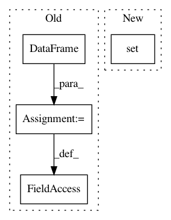

f33ab1719a747ab121cb4fb57d752efb1dea0287,tests/functions/test_expand_grid.py,,,#,67
Before Change
frames_series_output = [
pd.DataFrame([2, 3], columns=["x"]),
pd.DataFrame([2, 3], columns=["x_y"]),
pd.DataFrame([[2, 3], [6, 7]]).add_prefix("x_"),
]
zip_frame_series = zip(frames_series, frames_series_output)
@pytest.mark.parametrize("frames_series,outputs", zip_frame_series)
def test_frames_series_single_index(frames_series, outputs):
After Change
{"x": pd.Series([], dtype="int")},
{"x": pd.DataFrame([])},
{"x": [], "y": [2, 3]},
{"x": [2, 3], "y": set()},
{"x": np.array([])},
]
In pattern: SUPERPATTERN
Frequency: 3
Non-data size: 4
Instances
Project Name: ericmjl/pyjanitor
Commit Name: f33ab1719a747ab121cb4fb57d752efb1dea0287
Time: 2021-02-25
Author: samueloranyeli@gmail.com
File Name: tests/functions/test_expand_grid.py
Class Name:
Method Name:
Project Name: nilmtk/nilmtk
Commit Name: 72f3f5bf50ed2d91cdcfbe2cf47120a2df8883cd
Time: 2014-11-26
Author: jack-list@xlk.org.uk
File Name: nilmtk/elecmeter.py
Class Name: ElecMeter
Method Name: _get_stat_from_cache_or_compute
Project Name: NifTK/NiftyNet
Commit Name: 223bce2eb5903bf58a12250f3ea5585c33a7778e
Time: 2019-06-05
Author: carole.sudre@kcl.ac.uk
File Name: niftynet/contrib/csv_reader/csv_reader.py
Class Name: CSVReader
Method Name: initialise